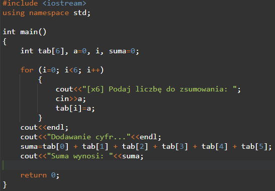
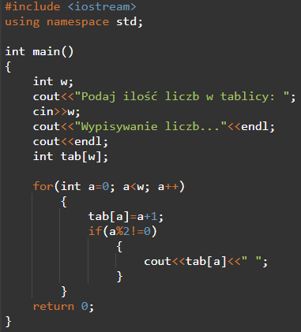

1. Napisz program, który policzy sumę wszystkich 6 elementów tablicy. Liczby do tablicy wczytywane są z klawiatury.

2. Napisz program, który wstawi 50 dowolnych liczb do tablicy i wypisze jedynie te, które są w parzystych indeksach tablicy.

3. Napisz program, który wstawi 10 liczb do tablicy z klawiatury, ale tylko dodatnich (sprawdzi czy użytkownik poprawnie wprowadza liczbę, jeśli nie to poinformuje użytkownika o błędniej liczbie i przerwie program) następnie wypisze tylko te, które są większe od 5.